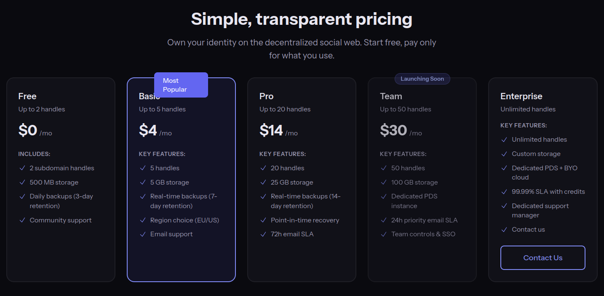

そろそろ PDS を個人で管理する時代か？

Eurosky と Periwinkle
ここのところ私のご近所 TL で話題の Eurosky がローンチしたのは昨年の11月で，今月に入って一般公開されたらしい。
- EU entrepreneurs launch social media infrastructure to liberate Europe from US tech monopolies — eurosky
- A Eurosky Account is just the start - Eurosky’s blog
私がこれを知ったのは骨折入院中で「面白そうなことをやってるなぁ」と指をくわえて見てたのだが，記事を読んでみるに，かなり政治的動機の強いサービスのようだ。 ちなみに資金は個人や組織からの寄付で賄っているそうな。 ユーザに割り当てられるリソースの詳細は明記されていない。
一方，今日はじめて知ったのだが， Periwinkle というサービスがあるらしい。 こちらは早期アクセスの段階。 TechCrunch が取り上げていた。
- Introducing Periwinkle: Truly own your social identity on Bluesky and AT Protocol - Periwinkle.social Blog
- Periwinkle is making self-hosted social media on Bluesky’s AT Protocol even easier | TechCrunch
TechCrunch はこれをサードパーティのホスティング・プロバイダによって管理されている WordPress インストールみたいだと評している。
This idea is similar to how people who want to create their own blog can choose between an easy-to-use hosted blog on WordPress.com, a DIY installation using the open source software from WordPress.org, or something in between — like a WordPress installation that’s managed by a third-party hosting provider. Periwinkle is offering the same, but for decentralized social media.
んで，こちらはちゃんとスペックと料金プランが示されている。

Basic プランで月600円くらいか？ それなら個人でも無理なく行けそう？
Kagi Assistant に Eurosky と Periwinkle を比較してもらった。
PeriwinkleとEuroskyは、どちらもBlueskyの基盤であるAT Protocolを活用し、ユーザーがデータを自己所有する「分散型ソーシャルメディア」の普及を目指していますが、そのアプローチや目的には明確な違いがあります。
共通点
- AT Protocolの採用
- 両者ともAT Protocolを基盤としており、Blueskyなどの他のネットワークと相互運用性があります。
- データの自己所有（自己主権型アイデンティティ）
- ユーザーが自身のデータやフォロワーとの繋がりを所有し、特定のプラットフォームに縛られず（ロックインされず）に移動できる仕組みを重視しています。
- 運用の簡略化
- サーバー構築などの技術的なハードルを下げ、一般ユーザーが容易に「自分のデータサーバー（PDS）」や「自分のアカウント」を持てるサービスを提供しています。
違い
| 項目 | Periwinkle | Eurosky |
|---|---|---|
| 主な役割 | マネージドPDSホスティング | ソーシャル・インフラストラクチャ |
| 重点を置く点 | 個人のサーバー運営の代行と管理ツールの提供。 | 欧州のデータ主権確立と独自の社会的ウェブ構築。 |
| 政治・地理的背景 | 特定の地域に限定せず、個人やチームの利便性を追求。 | 欧州（EU） の自立を掲げ、米国テック企業の独占に対抗。 |
| 主なターゲット | 自分のドメインで発信したい個人、クリエイター、小規模チーム。 | 欧州のユーザー、開発者、および民主的な対話空間を求める層。 |
| 提供価値 |
まとめ
- Periwinkleは、いわば「AT Protocol界のWordPress.com」のような存在で、技術的な手間を省いて自分の城（PDS）を持ちたい人向けのツールを提供しています。
- Euroskyは、より大きな枠組みで欧州独自のデジタル公共圏を作ろうとしており、インフラの提供だけでなく、政治的な独立性や民主的な対話の場を重視しています。
パッと見で「そんなこと書いとらんやろ」って部分は打ち消し線をしている。 これだから生成 AI は… それ以外はだいたい合ってると思う。 各自でも確認してね。
なお PDS リポジトリデータの移動には PDS MOOver が使える。
これで bsky.social にあるデータを失わずに新しい PDS に移せるし，万一利用してる PDS がポシャってもデータ移行はできそうである（突然死はどうしようもないが）。
ところで，これは完全に余談なのだが Eurosky も Periwinkle もブログ運営を Leaflet で行ってるのが面白い。 やはり時代は Leaflet なのか？
コリイ・ドクトロウ 𝕏 やめるってよ
今まで散々 Bluesky を dis ってた SF 作家のコリイ・ドクトロウ氏が，ついに Bluesky に参加し 𝕏 からは完全に足を洗うようだ。
だが――Blueskyの名誉のために言えば――彼らはやがてそれを理解し、独自のBlueskyサーバを構築するためのツールと手順を公開した。ケンがすぐに調べてくれて、すべて可能だと教えてくれたが、トロントのコロケーションケージに置いてあるLinuxボックスのハードウェアアップグレードが完了するまでは無理だという。そのアップグレードが数ヶ月前に終わり、昨日、ケンが私専用のBlueskyサーバの設置が完了したと知らせてくれた。こうして私はBlueskyに参加した。@doctorow.pluralistic.netである。
もう何年もの間、私はほぼ毎日、Twitterにこの告知を投稿してきた。
Twitterは日に日に悪化している。いつか使えなくなるまで劣化するだろう。メタクソ化に強い代替手段として、Fediverseが我々の最善の希望だ。私は@pluralistic@mamot.frにいる。
今日、私はその修正版を投稿する。以下の一文が追加される。
Blueskyでフォローしたい方は、@doctorow.pluralistic.netへ。これが私がTwitterに投稿する最後のスレッドだ。
どうやら彼は自前の PDS を立てたようだ。
DID が did:web:pluralistic.net になっていて PDSls からは見れなかった。
自前の PDS を立てる方法は公式ドキュメントにあるんだが，これを読んでもできる気がしない。 個人でやるなら Eurosky なり Periwinkle なり，あるいは他の PDS を提供しているサービスを利用するほうが現実的だと思う。 さくらインターネットあたりがこういうサービスやらないかなぁ…
欧州版 𝕏 じゃない，キラーアプリじゃない，万能アプリじゃない
そういえば，最近見たこのポストが面白かった。
AT protocol doesn’t play zero-sum, winner-takes-all games. “European X?” No, European data sovereignty for all of x/y/z in amicable competition. “Killer app?” No, interoperable apps as the monopoly-killer. “Everything-app?” No, everything-account in a pluriverse of user-owned software.
— Erlend Sogge Heggen (@erlend.sh) March 8, 2026 at 10:08 PM
[image or embed]
Blusky が提供する bsky.app も bsky.social も，大きなエコシステムの一部になりつつある。

Eurosky のドキュメントを見ても分かるように，欧州は AT Protocol を使ってリスク塗れのアメリカからの脱出を目指してるように見える。 Instagram の代替とされる Flashes や GitHub の代替とされる Tangled や Google ニュースの代替とされる Sill も atproto エコシステムの一部で，「万能アカウント（Everything Account）」を 所有する 私達はこれらのアプリやサービスの間を繋がりは維持したまま自由に渡り歩くことができる。
危機は変化を引き起こす。ウラジーミル・プーチンやイーロン・マスクやドナルド・トランプがいなければ、世界はもっとマシだっただろう。だが、この我慢できない、気短な、最低の男たちには1つ用途がある。行動を促すには緩慢すぎる危機を、無視できない緊急事態へと変えてくれた。プーチンはEUを化石燃料からの脱却に押しやった。マスクは何百万の人々を連合ソーシャルメディアに押し出した。トランプはポスト・アメリカのインターネットへの道を開いた。
私達は既存のソーシャル・メディアから押し出され Fediverse や Atmosphere に流れ着いたが，今になって見ればソーシャル・メディアの外にいるのは未だ既存のサービスに留まってる集団の方かも知れない。
世界がジャングルを囲んでいるんじゃない。ジャングルが世界を囲んでいるのです
ツールを直さなきゃ
個人的には Periwinkle のほうはちょっと興味があるのだが，ボット運用に使ってる自作ツールが bsky.social 以外の PDS に対応してないのね。
だからまず，そこから手を付けないといけない。
あと，常用しているぞーぺん（ZonePane）も bsky.social 以外の PDS に対応してない。
これが一番困ってる。
@zonepane@fedibird.com に要望を出したほうがいいかなぁ…